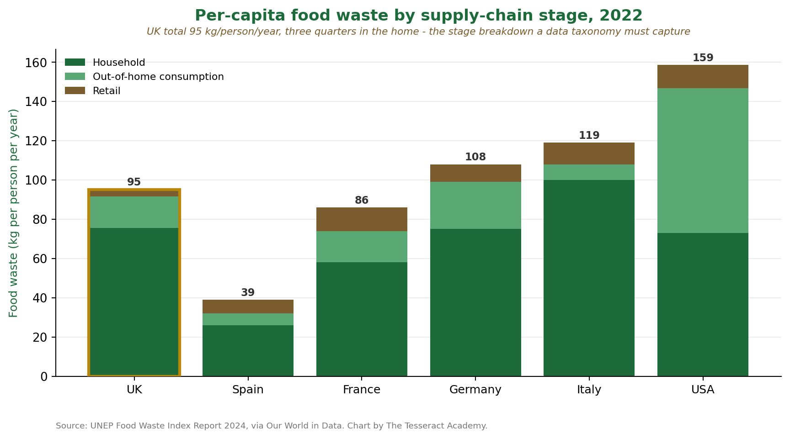

The UK wastes around 95 kg of food per person per year, roughly three quarters of it in the home. Understanding waste by supply-chain stage (retail, out-of-home consumption, household) is exactly the kind of structured evidence a data taxonomy has to capture, and the analytical discipline we bring to charting evidence by category.

Chart by The Tesseract Academy from UNEP Food Waste Index Report 2024 data (Our World in Data). Underpins our WRAP Food Loss and Waste data taxonomy work (PRC228, 2026).